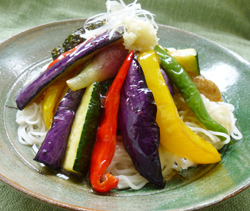

そうめんの
揚げ夏野菜あんかけ
揚げ夏野菜あんかけ
- 調理時間：30 分
- （一人当たり）
- カロリー：559kcal
- たんぱく質：12.9g
- 脂質：11.6g
- 塩分：3.8g


＜２人分＞
- そうめん（乾）
- 200g
- ナス
- 1本
- パプリカ（お好みで各色）
- 1/2個
- ミョウガ
- 2本
- ズッキーニ
- 1/2本
- 揚げ油
- 適量
- ショウガ
- 1片
- 長ネギ
- 少々
- ・だし汁
- 300ml
- ・みりん
- 50ml
- ・しょうゆ
- 50ml
- ・塩
- 少々
- ・バルサミコ酢
- 大さじ1
- ・水溶き片栗粉
- 適量
あん A


- ナス、パプリカ、ミョウガ、ズッキーニは食べやすい大きさに切り、素揚げする。
- ショウガはすりおろす。長ネギは白髪ねぎにする。
- あんをつくる。
鍋にだし汁、みりん、醤油、バルサミコ酢を入れてひと煮たちさせる。
塩で味をととのえ、水溶き片栗粉でとろみをつける。 - そうめんを茹でて、冷水でもみ洗いする。ザルにあげて水気を切る。
- 器にそうめんを盛り付け、素揚げにした野菜をのせ、③のあんをかける。
仕上げにすりおろしたショウガと白髪ねぎを天盛りにして完成。
そうめんの揚げ夏野菜あんかけ
段々と暑さが増し、日が長くなるにつれ、新しい季節の到来を感じます。
特に季節の変わり目は食欲が落ちてしまいますが、めん類はこんな時も手が伸びる夏の強い味方です。しかし、めん類だけを摂りすぎて、糖質過多になってしまうと代謝がスムーズにいかず、疲れや、だるいといった症状が現れます。
これを解消するには、糖質の代謝に関与するビタミンB1の補給です。ビタミンB1は豚肉、魚介類、玄米、緑黄色野菜などに含まれます。今回のレシピのように具だくさんにして栄養バランスを調えてみてください。